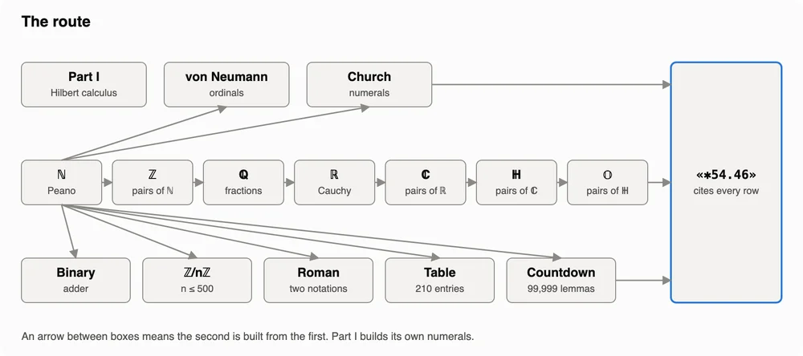

Proof by exhaustion
A proof in Lean 4 that 1 + 1 = 2. It is 616,873 lines long.
- Every number system built by hand, from Peano numerals to octonions and Roman numerals, with 1 + 1 = 2 proved in each
- No Mathlib and no shortcut tactics, checked line by line by Lean's kernel
October 2026Axiom Math's formalisation of the classification of finite simple groups runs to about 43 million lines, and it made me wonder how long a proof of 1 + 1 = 2 could honestly get. SAIR's Open Math OS gave me access to frontier open models, so I put 100 agents to the test. Lean's kernel checked every line they wrote.
